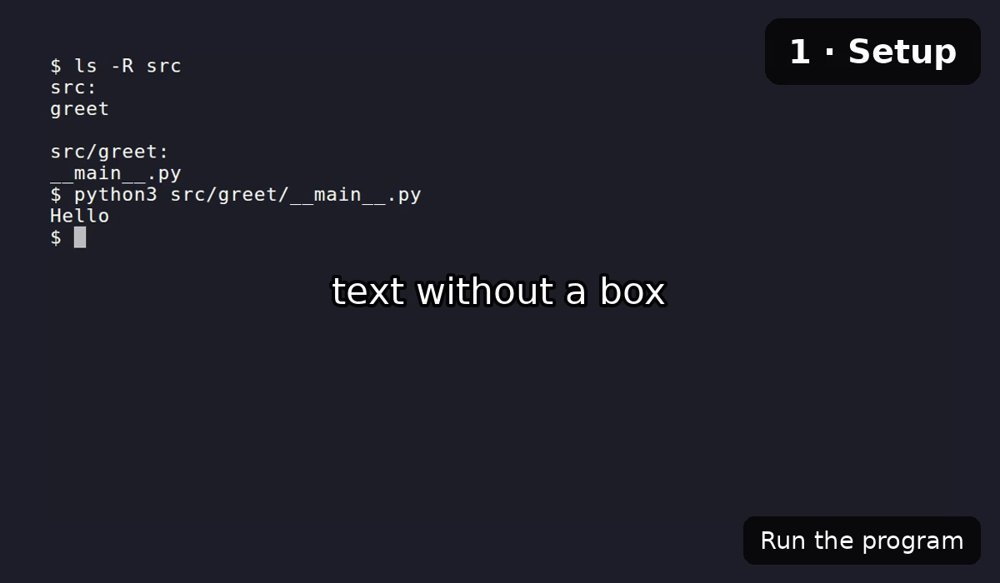

Markdown input¶
Since narratty 0.5.
A Markdown doc can be the source of a video, so one file is both read and watched. Paragraphs become the narration, code blocks become what the video types and runs. Plain docs need no extra markup. Comments and code block attributes, both invisible on the rendered page, change what the video does where the defaults don't fit.
This is the recommended way to use narratty. The doc stays the source: readers read
it, others watch or listen to the video. Every command runs while the video is
recorded, and narratty check also compares what the commands print with the doc (see
Checking docs in CI). A doc can be built on its own; a YAML
spec that points at it adds scenes before and after it, or combines several docs.
The video is made from this page; its spec is
examples/markdown/markdown.narratty.yaml.
Quick start¶
Write the doc as usual. This one says hello in the terminal.
A spec points at the doc with a markdown entry in its scenes. The entry turns into
ordinary scenes, so hand-written scenes can stand before and after it.
narratty compile prints the scenes the doc turns into. The paragraph is the
narration, and the console line is a command that runs.
$ narratty compile hello.narratty.yaml
scenes:
# from hello.md:5
- id: hello-1
narration: Say hello to the terminal.
actions:
- run: echo "Hello from Markdown"
- wait: {prompt: true}
narratty plan --sources lists where each scene comes from, and what was left out
and why.
Build the video like any other spec:
Building a doc on its own¶
Since narratty 0.6.
Every command that takes a spec also takes a Markdown doc:
narratty build hello.md # writes hello.mp4
narratty check hello.md # runs the commands and compares their output
The doc then implies its spec: a single markdown entry for the whole doc. Its
commands run in a copy of the doc's git repository, from the root, or in the doc's
folder outside a repository. A spec comment sets other keys, those of the spec and
those of the markdown entry:
The comment is YAML, invisible on the page like the other comments, and problems in it are reported at their line in the doc. It cannot hold scenes, and a YAML spec that points at the doc ignores it.
Write a YAML spec when the video needs more than the doc: scenes before or after it,
several docs, or several videos from one doc. narratty init --markdown hello.md
writes one to start from.
How a doc becomes scenes¶
The doc is read in order. Paragraphs collect until a code block runs; then they are the narration of the scene that runs it.
| Markdown | In the video |
|---|---|
| Paragraphs before a code block, same section | The narration of the scene that runs the block |
| Paragraphs after the last block of a section | A scene without actions; the output stays on screen |
| A block without a paragraph before it | A silent scene |
console block |
$ lines run, > lines right after them continue them; other lines are output, not typed, and compared by narratty check |
bash / sh block |
Each complete command runs (heredocs, if, for stay together); # … comments are not typed |
Other language with a title |
Written to that file (hidden), then shown with cat and a file overlay |
Other language without a title |
Left out |
| Inline code, links, emphasis | Read as plain text, so the lexicon applies to inline code too |
| List items | Read as sentences; a code block in an item runs like any other |
Quotes and GitHub alerts (> [!NOTE]) |
Read like paragraphs, without the [!NOTE] marker |
Admonitions !!! and open collapsible blocks ???+ |
Read without their title; code blocks inside run as usual |
Collapsed blocks ??? and <details> |
Left out, with everything inside |
Content tabs === "…" |
One tab per tab set, see below |
| An image on a line of its own | Shown as a slide while the text around it is spoken, see Images |
mermaid block |
Drawn as a slide (since 0.6), see Slides |
| Tables | Left out; with a table comment spoken row by row, with a slide comment shown (since 0.6), see Tables |
| Images within text, raw HTML | Left out |
Every command waits until the prompt is back, so the next one starts after it has
finished. A command that fails stops the build, as in a YAML spec; mark the block
expect-failure when that is the point (see Code block attributes).
Scene ids are <file stem>-<heading>-<n>, for example install-uv-2; a heading
whose slug is the file stem is left out (install-1, not install-install-1). A
block with an id uses <file stem>-<id>, which survives edits around it.
id_prefix replaces the file stem.
Callouts and tabs¶
Admonitions are spoken without their title, so a tip reads as part of the text.
Short paragraphs
Keep paragraphs short. Each one is a sentence or two of narration.
Collapsed blocks are for readers only. The video leaves them out, with everything inside, including code blocks.
Only on the page
This text and the command below are not part of the video.
This is how both look in the doc.
!!! tip "Short paragraphs"
Keep paragraphs short. Each one is a sentence or two of narration.
??? note "Only on the page"
This text and the command below are not part of the video.
Content tabs show one tab in the video: the first, or the first label the entry
lists in tabs. This video picks the bash tab.
Collapsible blocks that start open are spoken like admonitions. HTML details blocks
are left out like collapsed ones.
Images¶
An image on a line of its own is shown as a slide while the text around it is spoken.

The image stays until the next command or heading, so it never covers what is typed. It is embedded in the spec, which keeps it working in the sandbox without network.
Images within a sentence, remote images and formats other than PNG, JPEG, GIF, SVG
and WebP are left out. images: false in the entry leaves out all images, and a
skip comment a single one. A slide comment gives it a title, see Slides.
Tables¶
Since narratty 0.6.
A table is left out of the video unless a comment stands before it. With a table
comment it is shown as a slide, and its rows are spoken one by one, each highlighted
while it is spoken.
| Step | Command | Shows |
|---|---|---|
| Check | narratty validate |
problems, at the Markdown file and line |
| Preview | narratty plan --sources |
where each scene comes from |
| Build | narratty build |
the finished video |
This is the comment above the table.
<!-- narratty: table {say: "{Step}: {Command} shows {Shows}.", title: From doc to video} -->
| Step | Command | Shows |
- Without
say, each cell is read with its header, such as "Step: Check.", and empty cells are left out. sayfills in the cells of the columns named in braces; names match the header regardless of case.pause: 500mshighlights each row that long before it is spoken.title,themeandrowsset the look of the slide, as in theslidecomment.- Cells are read like paragraphs, so the lexicon applies to inline code in them.
A slide comment shows a table without reading it, while the text after it is
spoken. rows: 8 splits a long table into pages of 8 rows; each pause comment in
the text after it brings up the next page, and pages left when the text ends follow
for a few seconds each.
<!-- narratty: slide {title: All hazards, rows: 8} -->
| Hazard | Severity | Mitigation |
|---|---|---|
| … |
The first eight hazards concern the machine itself.
<!-- narratty: pause -->
The next ones concern the workplace around it.
Pauses¶
Since narratty 0.6.
Paragraphs that follow each other are spoken in one go, up to the next code block.
A pause comment ends the scene where it stands, and with a duration silence
follows.
This paragraph comes after a second of silence.
Paragraphs that follow each other are spoken in one go.
<!-- narratty: pause 1s -->
This paragraph comes after a second of silence.
Without a duration, pause only ends the scene; the next one
follows after timing.narration_buffer_ms. A horizontal rule (---) does not end a
scene. While a table with pages is shown, a pause brings up its next page.
Slides¶
Since narratty 0.6.
Tables, mermaid blocks and images become slides: shown full
screen while the text around them is spoken, dark unless the spec sets
slides: {theme: light}. GitHub draws mermaid blocks too, and so does mkdocs with
the mermaid custom fence of pymdownx.superfences.
flowchart LR
doc[Markdown doc] --> entry[markdown entry] --> scenes --> videoA slide comment before a table, diagram or image sets its title and look; this one
gave the diagram its title.
| Key | Does |
|---|---|
title |
Text above the content |
theme |
dark or light for this slide |
rows |
Table rows per page, see Tables |
html |
Shows an HTML file instead, from the next paragraph on |
Diagrams are drawn when the video is rendered, with the mermaid.min.js that comes
with the narratty image, so they need no network. Native renders read it from
NARRATTY_MERMAID_JS or from the data directory; narratty doctor shows where.
images: false leaves out diagrams too.
A slide made in HTML is named with html, relative to the doc:
Like an image, the page is embedded in the spec, so it must be self-contained:
styles inline, images inline as SVG or data: URLs.
Doc comments¶
HTML comments are invisible on the docs site and on GitHub. Those starting with
narratty: hold what only the video needs:
<!-- narratty: skip -->
This paragraph is only for readers.
<!-- narratty: say
Narration only the video has. It may span lines.
-->
<!-- narratty: overlay {text: compose.yaml, style: file} -->
<!-- narratty: hidden
git init demo && cd demo
-->
<!-- narratty: browser {scroll: auto, duration_ms: 6s} -->
The [Compose file reference](https://docs.docker.com/compose/) lists every key.
<!-- narratty: pause 800ms -->
<!-- narratty: table {say: "{Hazard}: {Mitigation}"} -->
| Hazard | Mitigation |
<!-- narratty: slide {title: Architecture} -->

| Comment | Does |
|---|---|
skip |
Leaves the next paragraph or block out of the video |
say |
Adds narration where it stands; skip plus say replaces a paragraph |
overlay |
Shows an overlay in the next scene; takes the same value as the action |
hidden |
Runs setup commands in the recorded shell without showing them |
browser |
Opens a link of the next paragraph in a browser view, see Opening links |
pause |
Ends the scene; with a duration, silence follows (since 0.6), see Pauses |
table |
Speaks the next table row by row on a slide (since 0.6), see Tables |
slide |
Sets the title and look of the next table, diagram or image, or shows an HTML file (since 0.6), see Slides |
spec |
Spec keys for building the doc on its own (since 0.6), see Building a doc on its own |
HTML comments cannot contain --; put such text into a YAML scene instead.
Opening links¶
Links are read as plain text. A browser comment opens one of them in a
browser view while its paragraph is spoken:
<!-- narratty: browser {scroll: auto, duration_ms: 6s} -->
The [Compose file reference](https://docs.docker.com/compose/) lists every key.
- Without
linkit opens the first link of the next paragraph;link: 2opens the second,link: "Compose file reference"the one with that text. A URL instead of the mapping,<!-- narratty: browser https://example.com -->, opens that page. - The other keys are those of the browser action:
scroll,duration_msandload_ms. - The paragraph starts a new scene, so the page appears with it. Like an image, the page stays until the next command or heading at the latest.
- A relative link to another page of the docs (
../user-guide/spec.md#overlays) opens the published page:site_urlfrommkdocs.ymlplus the page's path. - Web pages need network access: in the container that is
sandbox: {network: full}or an allowlist.
Code block attributes¶
An id and per-block options go into one attribute list after the language. mkdocs
uses the id as a link anchor and ignores narratty; GitHub ignores both.
```console {#install narratty="no-run"}
$ uv tool install narratty
```
```yaml {#spec title="demo.narratty.yaml"}
scenes: []
```
narratty="…" takes space-separated options:
| Option | Does |
|---|---|
no-run |
Types the command, then cancels it with Ctrl+C |
hidden |
Runs the block without showing it (setup) |
expect-failure |
The block's commands are expected to fail |
any-output |
The output the block shows is not compared (since 0.6), see Checking docs in CI |
Write attributes in braces
mkdocs renders console narratty="no-run" (without braces) as plain text. A
brace-less title="…" works on its own, but not together with an id.
Placeholders¶
Write placeholders as environment variables, which readers can set and copy:
The video types $SPEC as written, so values, including secrets, never appear on
screen. The value comes from sandbox.env, from
sandbox.env_passthrough (you set it on the host) or from a hidden comment with an
export. A command to run that still contains a placeholder like <url> is an
error with the hint to write it as $URL.
The markdown entry¶
A YAML spec decides everything at section level and above: which docs, which sections and in what order, the narration rule and the overlays. Several videos from one doc are several YAML files.
narration: all # default for every markdown entry
scenes:
- markdown: docs/environments.md
sections: [images, compose] # nested headings included; unset = whole doc
heading_overlays: 3
- id: outro
narration: That's all you need to get started.
- markdown: docs/building.md
narration: none # only `say` comments are spoken
heading_overlays: {levels: 3, breadcrumb: true}
defaults: {typing_speed_ms: 40}
overrides:
install: # the block {#install}
narration: Install it with uv.
fast: true
before: [{overlay: "pipx works too"}]
| Key | Default | Meaning |
|---|---|---|
markdown |
required | The doc, relative to the spec |
sections |
whole doc | Headings by TOC slug or title; a list path such as [compose, services] picks one of several equal headings |
narration |
spec's narration (all) |
all speaks every paragraph, none only say comments |
tabs |
[] |
Preferred content tab labels; otherwise each tab set's first tab |
heading_overlays |
none | Show headings down to this level, see Heading overlays |
file_titles |
true |
Show a file block's title as an overlay |
images |
true |
Show images on a line of their own and mermaid blocks, see Images |
id_prefix |
file stem | Start of the generated scene ids |
check_output |
true |
Let narratty check compare the output console blocks show, see Checking docs in CI (since 0.6) |
defaults |
{} |
Scene keys for every scene: typing_speed_ms, pause_ms, fast, timelapse, narration_start, expect_exit |
overrides |
{} |
Per block id: the same scene keys plus narration and before / after action lists |
A missing section or an override for an id that is not in the doc is an error with
a "did you mean". Transitions between docs are ordinary scenes, for example a hidden
run: cd other && clear and a scene with an overlay.
Heading overlays¶
heading_overlays: N shows the headings down to level N, each level in its own
built-in style: heading-1 is a title card in the centre, deeper levels appear at the
top right and fade after a few seconds. {levels: N, breadcrumb: true} shows levels 2
to N as one overlay instead, Environments › Compose › Services, which stays while
its section plays. Long breadcrumbs shorten their middle parts to … first
(max_length, default 50); separator changes the ›.
| Style | position |
size |
bold |
duration_ms |
|---|---|---|---|---|
heading-1 |
center |
large |
yes | 2.5s |
heading-2 |
top-right |
large |
yes | 3s |
heading-3 |
top-right |
medium |
no | 3s |
heading-4 and deeper |
top-right |
small |
no | 2.5s |
breadcrumb |
top-right |
small |
no | until the section ends |
file |
top |
small |
no | until the scene ends |
Change them like any style in overlay_styles.
Snippets and mkdocs¶
The doc is read the way this repo's mkdocs config renders it: admonitions,
collapsible blocks and content tabs (pymdownx.tabbed) as above, and
--8<-- "path" snippets (with an optional :start:end line range) inserted before
reading, relative to the snippets base_path in the nearest mkdocs.yml, else the
repository root. Errors in an inserted snippet name the snippet file and line.
Headings with an id (## Title {#custom}) are selected by that id.
Block snippets (--8<-- on a line of its own), URL snippets and named snippet
sections are not supported and are reported as errors.
Checking the result¶
narratty validate reports problems at the Markdown file and line.
narratty plan --sources SPEC lists every scene with the Markdown line it comes from,
and what was left out and why. narratty compile SPEC prints the spec with every
markdown entry replaced by its scenes: a way out of Markdown input, or a frozen copy
to build from.
Sandboxed runs only mount the spec file into the container, so they get the expanded spec; the Markdown docs stay on the host.
Checking docs in CI¶
Since narratty 0.6.
narratty check runs the doc's commands the way the video would, without recording,
voice or end card. It fails when a command fails (exit code 7) or prints something
else than the doc shows (exit code 8), with a diff:
In a console block, the lines after a $ command, up to the next one, are what it
prints:
- Colours, trailing spaces and blank lines at the start and end do not count.
- A line
...stands for any lines, also none;...within a line for any text, as inPython 3.... - A command without output lines in the doc runs, but its output is not compared.
narratty="any-output"on a block, orcheck_output: falseon the entry, turns the comparison off.- Builds check exit codes, but do not compare output.
The comparison is the run action's expect_output, which
narratty compile shows. narratty compile SPEC --fingerprint tells when a
committed video is older than its doc.
Not supported yet¶
- Comparing output in the editor layout.
- Narration rules beyond
allandnone, and a "skip the rest" comment. - Configurable handling of admonitions per type.